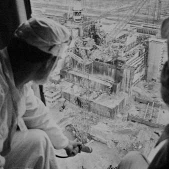

Intro
Chernobyl Disaster
The Chernobyl disaster was caused by a nuclear accident that occurred on Saturday 26 April 1986, at the No. 4 reactor in the Chernobyl Nuclear Power Plant.
1986년 4월 26일, 우크라이나 SSR의 체르노빌 원자력 발전소에서 폭발에 의한 방사능 유출 사고가 발생했다. 체르노빌 주변에 있는 러시아, 벨라루스, 우크라이나 세 나라뿐만 아니라, 유럽 곳곳으로 퍼져 많은 지역을 오염시켰다.
Location
Damaged District
사고가 일어난 체르노빌 원자력 발전소는 현재의 우크라이나와 벨라루스 국경 근처에, 체르노빌에서 북서쪽으로 약 18 km 떨어진 곳에 있었다. 사고 당시 체르노빌 발전소는 총 4기의 원자로를 운용 중이었고, 2기의 원자로를 추가로 짓고 있었다. 4기의 원자로는 모두 RBMK-1000형 원자로를 운용하고 있었다. 사고가 일어난 4호기는 1983년 운전을 시작하였으며, 2세대 RBMK-1000형 원자로를 운용하고 있었다.
Chernobyl
Disaster cause
nuclear disaster cause
1986년 4월 26일 오전 1시 24분에, 체르노빌 발전소의 원자로 4호기의 비정상적인 핵 반응으로 발생한 열이 냉각수를 열분해시키고, 그에 의해 발생한 수소가 원자로 내부에서 폭발함으로써 생긴 사고이다. 폭발은 원자로 4호기의 천장을 파괴하였으며, 파괴된 천장을 통해 핵 반응으로 생성된 다량의 방사성 물질들이 누출되었다. 누출된 물질에 의한 방사능의 총량은 약 5.3엑사베크렐로 추정되며, 국제 원자력 사고 척도(INES)에 의해 분류된 사고 등급 중 가장 심각한 사고를 의미하는 7등급에 올라 있다.
Disaster process
accident handling process
- 1.
- explosion of plant
- 에너지 출력 실험으로 인하여 체르노빌 원전에 두 번의 폭발 발생
01 : 24 am
- 2.
- search for cause
- 사고 직후 헬리콥터를 이용해 원전 건물의 화재 진압
01 : 28 am
- 3.
- extinguish a fire
- 사고 원인 조사 및 사고 처리반 조성으로 방사능 누출 방지 계획
01 : 24 am

- 4.
- prevent radiation leakage
- 방사능 누출 방지 조치를 실행하며 약 400명이 정화작업 실행
01 : 24 am
- 5.
- evacuate residents
- 약 24,725명의 인근 주민들을 방사능 오염이 적은 지역으로 대피시킴
10 : 00 pm
600people
Disaster Result
Damage of human life
당시 체르노빌 원전 사고 현장에 있었던 사람은 총 600명이었고 그 중 누구도 충분한 방사능 측정 장치나 방사능 방호 장비를 갖추지 않은 상태였다.
25thousand
Disaster Result
Damage of human life
체르노빌 원전 사고 1년 내에 직간접적인 영향으로 사망한 사람은 2만 5000명이었다.
city
Disaster Result
radiation damage
방사능은 바람을 타고 체르노빌 주변의 유럽 전역으로 퍼져나가 지역을 오염시켰다. 특히 인근 지역인 벨라루스에서는 갑상생암 발병률이 최고 200배 이상 늘어났다.
resident
Disaster Result
radiation damage
발전소로부터 약 30km 떨어진 지역 및 인근 108개 마을에서 총 24,725명의 주민이 이주해야했다. 이 이주 작업은 86년 9월까지 지속되었고 이후로도 주민들은 다른 마을에 떨어져 살고 있다.
leakage
Disaster Result
radiation damage
사고 잔해를 콘크리트로 봉쇄해놓은 원전 석관 안에는 약 180톤의 방사성 물질이 그대로 남아있다. 이 방사능은 외부로 나온 것보다 약 50배가 높았으며 약 30년 후인 2013년에 새로운 방호벽이 완공되었다.